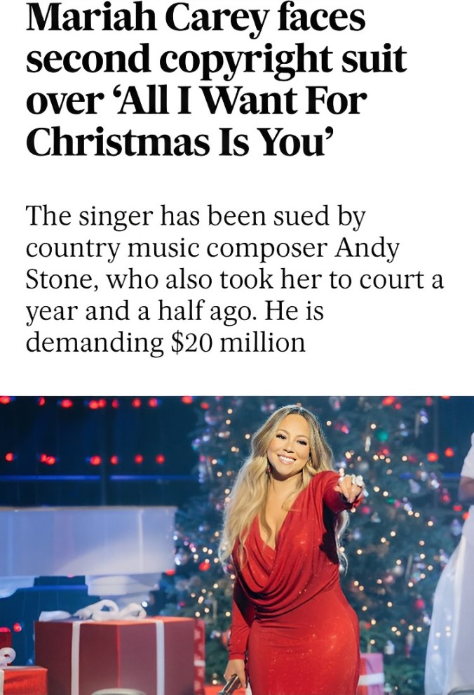
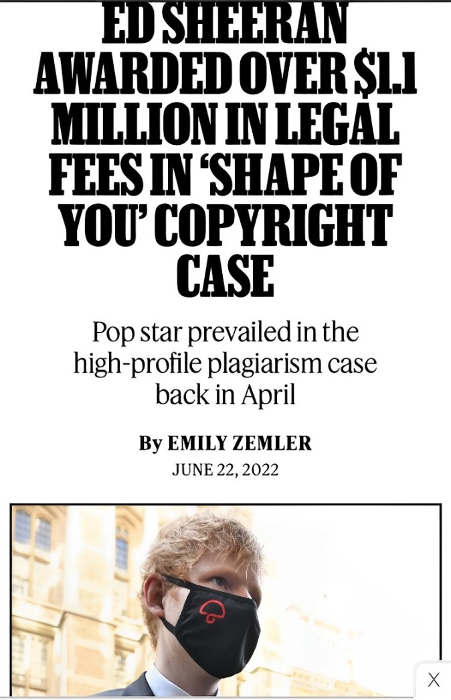
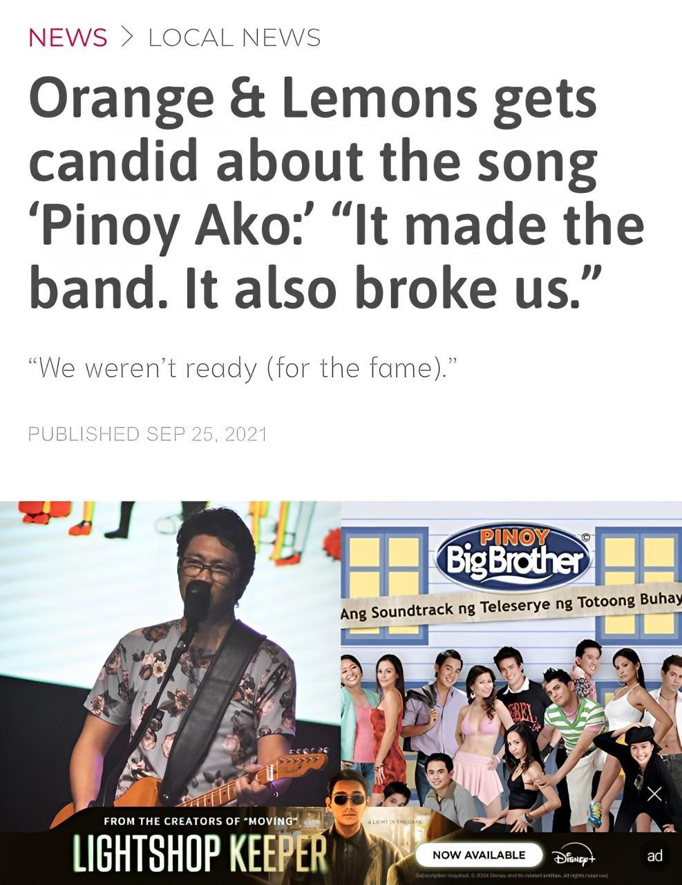

PLAIGIARISM DETECTION, PENALTIES AND CONSEQUENCES
WHAT IS PLAGIARISM?
Plagiarism is when you take someone else's work and present it as your own. This includes using ideas, writing, or materials from other people, such as classmates or published authors. You must give credit to the original source unless the information is considered "common knowledge." Keep in mind that what counts as common knowledge can vary from one course to another
| TYPES OF PLAIGIARISM | DESCRIPTION |
|---|---|
| Word-for-word plaigiarism | Copying text exactly as it appears in the original source. |
| Copy & Paste Plagiarism | Taking text from an electronic source and inserting it into your work without changes. |
| Word Switch Plagiarism | Altering a few words in a sentence from the original source while keeping most of it the same. |
| Style Plagiarism | Imitating the writing style and structure of another author. |
CASES INVOLVING PLAGIARISM
There have been notable cases of plagiarism in the music industry:
- MARIAH CAREY

In June 2024, songwriter Andy Stone sued Mariah Carey over her famous holiday song "All I Want for Christmas Is You," claiming it copied his song of the same title from 1989. Despite the similar titles, the songs have different melodies and lyrics.
Consequence: An accusation of plagiarism can be very damaging to an artist's reputation, resulting in a loss of trust and support from fans. High-profile artists like Carey might experience reputational harm that could negatively affect future sales and collaborations. - ED SHEERAN

Ed Sheeran was charged with plagiarizing phrases in the song "Shape of You" in March 2024. However, by April, he won the case. According to the judge, similar patterns in music often happen because there are very few notes that songwriters could use.
Consequence: Ed Sheeran Obtains Over $1.1 Million in Litigation Costs in 'Shape of You' Copyright Claim. - ORANGE AND LEMON

Orange and Lemons is a Filipino band, who were accused of using "Chandeliers" from Care for their 2005 hit "Pinoy Ako," and denied it.
Consequence: This one piece, Clem Castro of Orange & Lemons has seated himself to talk about how this song changed everything about the band. "We weren't ready for all this," he says, gesturing with hands flaying apart. "It made the band, but it also broke us."
LAW RELATING TO PLAGIARISM IN THE PHILIPPINES
- Republic Act 10175:
Copyright in the Philippines is the same as plagiarism, and it is considered under the cybercrime law of the Republic Act 10175. According to the Department of Justice, plagiarism is not a crime butit is the same in copyright violation. Plagiarism has consequences or penalties for about six years of imprisonment, and a fine of fifty thousand to one hundred fifty thousand pesos or equivalent to one two hundred dollars to three thousand six hundred dollars. - Intellectual Property Protection:
The laws regarding plagiarism and intellectual property differ in various countries. In the Philippines, for instance, intellectual property laws favor protection but are not implemented consistently. Creators need to register their work based on local laws since protection is not automatic across borders. To learn more about how to protect your intellectual property rights in the Philippines, you can visit the Philippine Intellectual Property Office. - The U.S. Government is prepared to assist in the protection of intellectual property rights, but only if rights holders take action to secure and enforce their rights in a timely fashion. It is the rights holder's responsibility to act promptly on their case; government advice does not supplant this responsibility.
- When dealing with partners, you should be very cautious. A good partner will help protect your IP rights, but if you let them register your IP for you, then you risk losing. They might claim ownership of your IP and may not return those rights when your partnership ends.
- Companies in the Philippines should watch out for their projects and sales. Small and medium-sized businesses should collaborate with trade associations and organizations dedicated to the protection of IP and preventing counterfeiting.
HOW TO AVOID PLAGIARISM
To avoid plagiarism, always give credit when you:
- Use someone else's ideas, opinions, or theories.
- Quote another person's spoken or written words.
- Paraphrase someone else's work.
Cultural and Industry-Specific Views
Cultural differences play a significant role in how plagiarism is understood and addressed. For instance:
- In East Asia, citing sources is sometimes seen as unnecessary because respect for authors is culturally ingrained.
- In journalism, plagiarism undermines trust and ethics, often leading to career-ending consequences.
- In music, copyright laws enforce originality and penalize duplication through monetary and legal penalties.
CONCLUSION
To effectively prevent plagiarism and protect the integrity of their diplomas, educational institutions must ensure proper referencing and academic writing, creating a culture of academic integrity and accountability among students.
References:
Rip off or mere happenstance? These OPM hits were once caught up in copyright controversies
Ed Sheeran wins court battle over Shape of You plagiarism accusation
Mariah Carey faces “All I Want For Christmas Is You” copyright infringement lawsuit